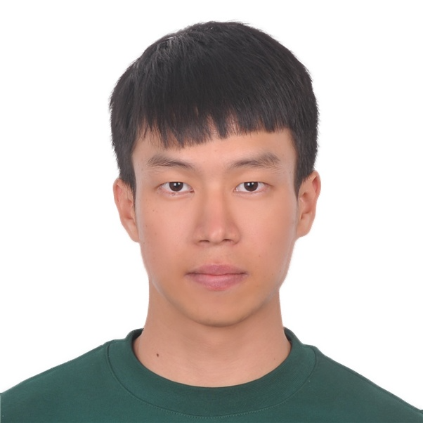

Chenyang Li

Summary
I am a computer science student at Northeastern University. I am specified in web development and database management
Education
- Master in Computer and Information Science - Northeastern University
- Mastrer in Cognitive Rehabilitation Science - UT Austin
- Bachelor of Science in Kinesiology - Miami University
Experience
Research Assistance, Neuromuscular Phisiology Lab, UT-Austin TX
09/2021 - 08/2023
-
Designed and Investigated Neuromuscular Control Patterns of plantar
flexors studies in Stroke patients.
-
Assisted with ongoing projects involved single motor unit recording in
patients with and without shoulder impingement syndrome.
Lab Instructor, Dept of Biology, UT-Austin, TX
09/2021 - 08/2023
-
Instructed Micro/Gross Anatomy lab sessions the past four semesters
to over 200 students with 4.8/5.0 satisfaction score.
-
Recruited and Managed 10 undergraduate Teaching Assistants.
Research Assistant, KNH department, Mimai University
08/2020 - 06/2021
- Analyzed and visualized data on research projects including DEI
analysis for BSP Clinics, NBA’s fan interaction and communication
using Python.
-
Published at Journal of Communication Sport as co-author.
Skills
- C++
- MySQL
- HTML, CSS, React
- Python
Honors
- Finalist of Assistive Technology Competition at College of Engineering with $500 award.
- President's List
Contact me